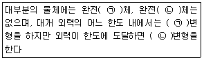
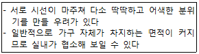
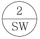
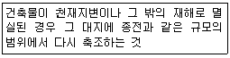
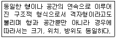

전산응용건축제도기능사 (2014-04-06 기출문제)
1과목: 건축구조
1. 목조 벽체에 들어가지 않는 것은?
- 샛기둥
- 평기둥
- 가새
- 주각
(정답률: 69%)

2. 강구조의 특징을 설명한 것 중 옳지 않은 것은?
- 강도가 커서 부재를 경량화 할 수 있다.
- 콘크리트 구조에 비해 강도가 커서 바닥진동 저감에 유리하다.
- 부재가 세장하여 좌굴하기 쉽다.
- 연성구조이므로 취성파괴를 방지할 수 있다.
(정답률: 49%)
3. 블록구조에 테두리보를 설치하는 이유로 옳지 않은 것은?
- 횡력에 의해 발생하는 수직균열의 발생을 막기 위해
- 세로철근의 정착을 생략하기 위해
- 하중을 균등히 분포시키기 위해
- 집중하중을 받는 블록의 보강을 위해
(정답률: 72%)
4. 은행ㆍ호텔 등의 출입구에 통풍ㆍ기류를 방지하고 출입인원을 조절할 목적으로 쓰이며 원통형을 기준으로 3~4개의 문으로 구성된 것은?
- 미닫이문
- 플러시문
- 양판문
- 회전문
(정답률: 94%)
5. 벽돌쌓기 방법 중 프랑스식 쌓기에 대한 설명으로 옳은 것은?
- 한 켜 안에 길이쌓기와 마구리쌓기를 병행하여 쌓는 방법이다.
- 처음 한 켜는 마구리쌓기, 다음 한 켜는 길이쌓기를 교대로 쌓는 방법이다.
- 5~6켜는 길이쌓기로 하고, 다음 켜는 마구리쌓기를 하는 방식이다.
- 모서리 또는 끝부분에 칠오토막을 사용하여 쌓는 방법이다.
(정답률: 52%)
6. 철근 콘크리트구조의 특성으로 옳지 않은 것은?
- 내구ㆍ내화ㆍ내풍적이다.
- 목구조에 비해 자체중량이 크다.
- 압축력에 비해 인장력에 대한 저항능력이 뛰어나다.
- 시공의 정밀도가 요구된다.
(정답률: 73%)
7. 입체트러스의 구조에 대한 설명으로 옳은 것은?
- 모든 방향에 대한 응력을 전달하기 위하여 절점은 항상 자유로운 핀(pin) 집합으로만 이루어져야 한다.
- 풍하중과 적설하중은 구조계산 시 고려하지 않는다.
- 기하학적인 곡면으로는 구조적 결함이 많이 발생하기 때문에 주로 평면 형태로 제작된다.
- 구성부재를 규칙적인 3각형으로 배열하면 구조적으로 안정이 된다.
(정답률: 68%)
8. 강구조의 주각부분에 사용되지 않는 것은?
- 윙 플레이트
- 데크 플레이트
- 베이스 플레이트
- 클립 앵글
(정답률: 63%)
9. 보가 없이 바닥판을 기둥이 직접 지지하는 슬래브는?
- 드롭패널
- 플랫슬래브
- 캐피탈
- 워플슬래브
(정답률: 83%)
10. 벽돌조에서 내력벽의 두께는 당해 벽높이의 최소 얼마 이상으로 해야 하는가?
- 1/8
- 1/12
- 1/16
- 1/20
(정답률: 55%)
11. 기둥과 기둥 사이의 간격을 나타내는 용어는?
- 아치
- 스팬
- 트러스
- 버트레스
(정답률: 68%)
12. 목재 왕대공 지붕틀에 사용되는 부재와 연결철물의 연결이 옳지 않은 것은?
- ㅅ자보와 평보 - 안장쇠
- 달대공과 평보 - 볼트
- 빗대공과 왕대공 - 꺽쇠
- 대공 밑잡이와 왕대공 - 볼트
(정답률: 52%)
13. 연약지반에 건축물을 축조할 때 부동침하를 방지하는 대책으로 옳지 않은 것은?
- 건물의 강성을 높일 것
- 지하실을 강성체로 설치할 것
- 건물의 중량을 크게 할 것
- 건물은 너무 길지 않게 할 것
(정답률: 84%)
14. 철근콘크리트 기초보에 대한 설명으로 옳지 않은 것은?
- 부동 침하를 방지한다.
- 주각의 이동이나 회전을 원활하게 한다.
- 독립기초를 상호간 연결한다.
- 지진 발생 시 주각에서 전달되는 모멘트에 저항한다.
(정답률: 74%)
15. 건물의 주요 뼈대를 공장제작한 후 현장에 운반하여 짜맞춘 구조는?
- 조적식 구조
- 습식 구조
- 일체식 구조
- 조립식 구조
(정답률: 87%)
16. 철근콘크리트 구조형식으로 가장 부적합한 것은?
- 트러스 구조
- 라멘 구조
- 플랫슬래브 구조
- 벽식 구조
(정답률: 49%)
17. 내면에 균일한 인장력을 분포시켜 얇은 합성수지 계통의 천을 지지하여 지붕을 구성하는 구조는?
- 입체트러스구조
- 막구조
- 철판구조
- 조적식구조
(정답률: 82%)
18. 슬래브의 장변과 단변의 길이를 비를 기준으로 한 슬래브에 해당하는 것은?
- 플랫 슬래브
- 2방향 슬래브
- 장선 슬래브
- 원형식 슬래브
(정답률: 72%)
19. 목제 플러시 문(Flush Door)에 대한 설명으로 옳지 않은 것은?(오류 신고가 접수된 문제입니다. 반드시 정답과 해설을 확인하시기 바랍니다.)
- 울거미를 짜고 중간살을 25㎝ 이내의 간격으로 배치한 것이다.
- 뒤틀림 변형이 심한 것이 단점이다.
- 양면에 합판을 교착한 것이다.
- 위에는 조그마한 유리창경을 댈 때도 있다.
(정답률: 64%)
20. 벽돌 내쌓기에서 한 켜씩 내쌓을 때의 내미는 길이는?
- (1/2)B
- (1/4)B
- (1/8)B
- 1B
(정답률: 71%)
2과목: 건축재료
21. 점토를 한번 소성하여 분쇄한 것으로서 점성 조절재로 이용되는 것은?
- 질석
- 샤모테
- 돌로마이트
- 고로슬래그
(정답률: 54%)
22. 유기재료에 속하는 건축 재료는?
- 철재
- 석재
- 아스팔트
- 알루미늄
(정답률: 58%)
23. 1종 점토벽돌의 압축강도 기준으로 옳은 것은?
- 10.78 N/㎟ 이상
- 20.59 N/㎟ 이상
- 24.50 N/㎟ 이상
- 26.58 N/㎟ 이상
(정답률: 61%)
24. 유리블록에 대한 설명으로 옳지 않은 것은?
- 장식 효과를 얻을 수 있다.
- 단열성은 우수하나 방음성이 취약하다.
- 정방형, 장방형, 둥근형 등의 형태가 있다.
- 대형 건물 지붕 및 지하층 천장 등 자연광이 필요한 것에 적합하다.
(정답률: 72%)
25. 연강판에 일정한 간격으로 금을 내고 늘려서 그물코 모양으로 만든 것으로 모르타르 바탕에 쓰이는 금속 제품은?
- 메탈라스
- 펀칭메탈
- 알루미늄판
- 구리판
(정답률: 61%)
26. 보기의 (ㄱ)과 (ㄴ)에 알맞은 것은?

- (ㄱ) 소성, (ㄴ) 탄성
- (ㄱ) 인성, (ㄴ) 취성
- (ㄱ) 취성, (ㄴ) 인성
- (ㄱ) 탄성, (ㄴ) 소성
(정답률: 66%)
27. 시멘트의 응결 및 경화에 영향을 주는 요인 중 가장 거리가 먼 것은?
- 시멘트의 분말도
- 온도
- 습도
- 바람
(정답률: 76%)
28. 결로현상 방지에 가장 좋은 유리는?
- 망입유리
- 무늬유리
- 복층유리
- 착색유리
(정답률: 85%)
29. 강의 열처리 방법 중 담금질에 의하여 감소하는 것은?
- 강도
- 경도
- 신장률
- 전기저항
(정답률: 57%)
30. 건축물의 용도와 바닥 재료의 연결 중 적합하지 않은 것은?
- 유치원의 교실 – 인조석 물갈기
- 아파트의 거실 – 플로어링 블록
- 병원의 수술실 – 전도성 타일
- 사무소 건물의 로비 - 대리석
(정답률: 76%)
31. 양털, 무명, 삼 등을 혼합하여 만든 원지에 스트레이트 아스팔트를 침투시켜 만든 두루마리 제품은?
- 아스팔트 싱글
- 아스팔트 루핑
- 아스팔트 타일
- 아스팔트 펠트
(정답률: 68%)
32. 한국산업표준(KS)의 부문별 분류 중 옳은 것은?
- A : 토건부문
- B : 기계부문
- D : 섬유부문
- F : 기본부문
(정답률: 66%)
33. 나무조각에 함성수지계 접착제를 섞어서 고열, 고압으로 성형한 것은?
- 코르크 보드
- 파티클 보드
- 코펜하겐 리브
- 플로어링 보드
(정답률: 66%)
34. 점토벽돌의 품질 결정에 가장 중요한 요소는?
- 압축강도와 흡수율
- 제품치수와 함수율
- 인장감도와 비중
- 제품모양과 색깔
(정답률: 77%)
35. 블리딩(Bleeding)과 크리프(Creep)에 대한 설명으로 옳은 것은?
- 블리딩이란 굳지 않은 모르타르나 콘크리트에 있어서 윗면에 물이 스며 나오는 현상을 말한다.
- 블리딩이란 콘크리트의 수화작용에 의하여 경화하는 현상을 말한다.
- 크리프란 하중이 일시적으로 작용하면 콘크리트의 변형이 증가하는 현상을 말한다.
- 크리프란 블리딩에 의하여 콘크리트 표면에 떠올라 침전된 물질을 말한다.
(정답률: 66%)
36. 금속에 열을 가했을 때 녹는 온도를 용융점이라 하는데 용융점이 가장 높은 금속은?
- 수은
- 경강
- 스테인리스강
- 텅스텐
(정답률: 59%)
37. 다공질이며 석질이 균일하지 못하고 암갈색의 무늬가 있는 것으로 물갈기를 하면 평활하고 광택이 나는 부분과 구멍과 골이 진 부분이 있어 특수한 실내장식재로 이용되는 것은?
- 테라죠(terrazzo)
- 트래버틴(travertine)
- 펄라이트(perlite)
- 점판암(clay stone)
(정답률: 63%)
38. 모자이크타일의 재질로 가장 좋은 것은?
- 토기질
- 자기질
- 석기질
- 도기질
(정답률: 69%)
39. 콘크리트의 강도 중에서 가장 큰 것은?
- 인장 강도
- 전단 강도
- 흼 강도
- 압축 강도
(정답률: 80%)
40. 혼화재료 중 혼화재에 속하는 것은?
- 포졸란
- AE제
- 감수제
- 기포제
(정답률: 55%)
3과목: 건축계획 및 제도
41. 통기방식 중 트랩마다 통기되기 때문에 가장 안정도가 높은 방식은?
- 루프 통기방식
- 결합 통기방식
- 각개 통기방식
- 신정 통기방식
(정답률: 80%)
42. 다음 설명에 알맞은 거실의 가구배치 형식은?

- 대면형
- 코너형
- 직선형
- 자유형
(정답률: 87%)
43. 투시도법의 시점에서 화면에 수직하게 통하는 투사선의 명칭으로 옳은 것은?
- 소점
- 시점
- 시선축
- 수직선
(정답률: 47%)
44. 급수펌프, 양수펌프, 순환펌프 등으로 건축설비에 주로 사용되는 펌프는?
- 왕복식 펌프
- 회전식 펌프
- 피스톤 펌프
- 원심식 펌프
(정답률: 43%)
45. 동선의 3요소에 속하지 않는 것은?
- 속도
- 빈도
- 하중
- 방향
(정답률: 65%)
46. 다음의 창호기호 표시가 의미하는 것은?

- 강철창
- 강철그릴
- 스테인리스 스틸창
- 스테인리스 스틸그릴
(정답률: 66%)
47. 주택의 현관에 관한 설명으로 옳지 않은 것은?
- 한 가정에 대한 첫 인상이 형성되는 공간이다.
- 현관의 위치는 도로와의 관계, 대지의 형태 등에 의해 결정된다.
- 현관의 조명은 부드러운 확산광으로 구석까지 밝게 비추는 것이 좋다.
- 현관의 벽체는 저명도, 저채도의 색채로 바닥은 고명도, 고채도의 색채로 계획하는 것이 좋다.
(정답률: 74%)
48. 건축도면의 크기 및 방향에 관한 설명으로 옳지 않은 것은?
- A3 제도용지의 크기는 A4 제도용지의 2배이다.
- 접은 도면의 크기는 A4의 크기를 원칙으로 한다.
- 평면도는 남쪽을 위로 하여 작도함을 원칙으로 한다.
- A3 크기의 도면은 그 길이 방향을 좌우 방향으로 놓은 위치를 정위치로 한다.
(정답률: 71%)
49. 건축물의 층의 구분이 명확하지 아니한 건축물의 경우, 건축물의 높이 얼마마다 하나의 층으로 산정하는가?
- 3m
- 3.5m
- 4m
- 4.5m
(정답률: 79%)
50. 건축법령상 다음과 같이 정의되는 용어는?

- 신축
- 증축
- 재축
- 개축
(정답률: 85%)
51. 건축물의 입체적인 표현에 관한 설명 중 옳지 않은 것은?
- 같은 크기라도 명암이 진한 것이 돋보인다.
- 윤곽이나 명암을 그려 넣으면 크기와 방향을 느끼게 된다.
- 같은 크기와 농도로 된 점들은 동일 평면상에 위치한 것으로 보인다.
- 굵기가 다르고 크기가 같은 직사각형 중 굵은 선의 직사각형이 후퇴되어 보인다.
(정답률: 81%)
52. 배경을 검정으로 하였을 경우, 다음 중 가시도가 가장 높은 색은?
- 노랑
- 주황
- 녹색
- 파랑
(정답률: 84%)
53. 건축도면에서 보이지 않는 부분의 표시에 사용되는 선의 종류는?
- 파선
- 가는 실선
- 일점 쇄선
- 이점 쇄선
(정답률: 82%)
54. 건축물의 묘사에 있어서 묘사 도구로 사용하는 연필에 관한 설명으로 옳지 않은 것은?
- 다양한 질감 표현이 불가능하다.
- 밝고 어두움의 명암 표현이 가능하다.
- 지울 수 있으나 번지거나 더러워질 수 있다.
- 심의 종류에 따라서 무른 것과 딱딱한 것으로 나누어진다.
(정답률: 83%)
55. 메탈 할라이드 램프에 관한 설명으로 옳지 않은 것은?
- 휘도가 높다.
- 시동전압이 높다.
- 효율은 높으나 연색성이 나쁘다.
- 1등당 광속이 많고 배광제어가 용이하다.
(정답률: 65%)
56. 다음 설명에 알맞은 공간의 조식 형식은?

- 직선식
- 방사식
- 그물망식
- 중앙집중식
(정답률: 66%)
57. 표면결로의 방지방법에 관한 설명으로 옳지 않은 것은?
- 실내에서 발생하는 수증기를 억제한다.
- 환기에 의해 실내 절대습도를 저하한다.
- 직접가열이나 기류촉진에 의해 표면온도를 상승시킨다.
- 낮은 온도로 난방시간을 길게 하는 것보다 높은 온도로 난방시간을 짧게 하는 것이 결로방지에 효과적이다.
(정답률: 72%)
58. 소방시설은 소화설비, 경보설비, 피난설비, 소화용수설비, 소화활동설비로 구분할 수 있다. 다음 중 소화설비에 속하지 않는 것은?
- 연결살수설비
- 옥내소화전설비
- 스프링클러설비
- 물분무등소화설비
(정답률: 52%)
59. 주거 단지의 단위 중 초등학교를 중심으로 한 단위는?
- 인보구
- 근린지구
- 근린분구
- 근린주구
(정답률: 65%)
60. 강재 표시방법 2L-125×125×6에서 6이 나타내는 것은?
- 수량
- 길이
- 높이
- 두께
(정답률: 64%)